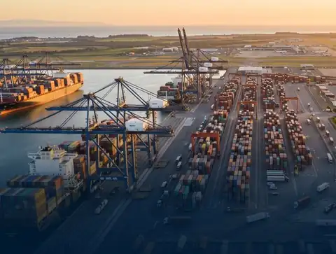
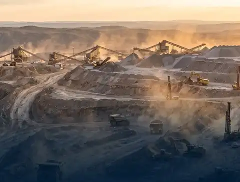

Conseil EPC+F · Structuration ECA / IFI / IFD
Nous concevons la transaction qui relie la réalisation EPC à un financement ECA, IFI et IFD de long terme pour les projets d'infrastructure, d'énergie et d'industrie.
Notre position
Nous alignons maître d'ouvrage, entreprise, prêteurs et conseils autour d'un dossier unique destiné aux prêteurs, afin que chacun s'engage sur des bases bancables et exécutables.
L'écart que nous comblons
Beaucoup de projets sont techniquement attractifs mais non finançables. D'autres ont une idée de financement mais manquent de la rigueur technique, d'achats ou d'exécution qu'exigent prêteurs, ECA, IFI et IFD. Nous traitons ces écarts tôt, avant qu'ils ne se traduisent en retards coûteux, reconception, lacunes documentaires et revers de financement.
Ce que nous faisons
Voie de financement, logique d'éligibilité ECA/IFI/IFD et cadre transactionnel.
02Modèles, scénarios et dossier de bancabilité destiné aux prêteurs.
03Périmètre, maturité des études, CAPEX et revue EIES qui résistent à la due diligence.
04Stratégie fournisseurs et contenu d'origine alignés sur les règles des ECA.
05Planification de l'exécution, logique de calendrier et contrôle de projet.
06KYC, documentation ECA et dossiers de tirage, jusqu'à l'utilisation.
Filtre de maturité
Il n'a pas besoin d'être parfait au stade de l'évaluation. Il lui faut une trajectoire crédible pour combler les écarts.
Profil illustratif. Six enjeux qui déterminent l'appétit des prêteurs et des ECA.
Notre méthode
Un dossier de transaction bancable, prêt pour les prêteurs et exécutable.
Secteurs
Nous accompagnons les secteurs à forte intensité capitalistique où la bancabilité dépend de la clarté technique, de la rigueur des achats, de contrats fiables et de structures de financement à long terme.


Expérience
Asie, Afrique et CEI. Structuration technique et financière.
Plusieurs pays. Alignement ECA et bancabilité.
Structuration EPC+F et gestion des décaissements.
Couverture mondiale
Agences de crédit à l'exportation, institutions de financement du développement et financeurs partenaires en Europe, dans les Amériques, au Moyen-Orient, en Afrique et en Asie-Pacifique.
Les institutions citées représentent l'univers plus large de transactions, de réunions, de conseil et d'apporteurs de capitaux dans lequel nos professionnels ont travaillé. Ces références n'impliquent ni partenariat exclusif, ni mandat formel, ni représentation officielle, sauf mention expresse.
Analyses
En bref
Finance, ingénierie, E&S, achats et conseil à la mise en œuvre du projet, développés ensemble dès le départ.
Des projets techniquement mûrs, commercialement cohérents et correctement structurés, conformes aux exigences des prêteurs.
Un alignement précoce avec les ECA, IFI, IFD, prêteurs commerciaux et partenaires de risque sur le chemin du bouclage financier.
Décaissement, documentation, interfaces avec les entreprises et conformité, menés jusqu'à la livraison du projet.